「つくるっち2.0x」ダウンロード＆説明
「つくるっち2.0x」は小学生から大人まで、プログラミング学習や電子工作を目的に開発したスクラッチ互換のプログラミング環境です。Windowsのみ対応です。 MIT LabのScratch2.0とMakeblock社のmBlock3を元に開発したGPLライセンスのオープンソースソフトウェア＆フリーウェアです。
- ダウンロードと実行（ATmega版） リモコンロボ、クアッドクローラーはこちら
- exeを実行したときにエラーが出るとき
- プログラムの種類
- ロボットをつないでPC通信モードに設定 (プログラミングを始める)
- ロボットを最初のプログラムに戻す (プログラミングをやめるとき)
- プログラムをパソコンに保存、保存したプログラムを開く、プログラムを消す
- リリース履歴、ソースコード
クアッドクローラー本体ソフトの更新
- つくるっちアプリをダウンロード。最新版は20220204です。
http://sohta02.sakura.ne.jp/release/TuKuRutchInstaller.20220204.avr.zip
- [ロボット] - [クアッドクローラー] を選択

- クアッドクローラーを接続し、[接続] - [ロボットに接続] を選択。赤線の部分がNormal: QuadCrawler1.5のときは最新の本体ソフトです。Normal: QuadCrawler1.5でないときは [接続] - [ロボットを最初のプログラムに戻す] で本体ソフトを更新して下さい。

- サーボ角度の微調整を行っていないときはこのページに従ってサーボ角度の微調整を行って下さい。
ダウンロードと実行（ATmega版）
リモコンロボ、クアッドクローラーはこのATmega版を使って下さい。
クアッドクローラー本体ソフトの更新はこちら、サーボ微調整はこちらを参照して下さい
- ダウンロードと展開
TuKuRutch.xxx.exeをダウンロード・実行して下さい。
http://sohta02.sakura.ne.jp/release/TuKuRutchInstaller.20220204.avr.zip
zipファイルは約210MB、展開すると約550MBになります、パソコンのHDDの空き容量に注意して下さい。Windowsのみ対応です。
. - CH341SERを実行し、INSTALLを押して下さい（デバイスドライバインストール）。
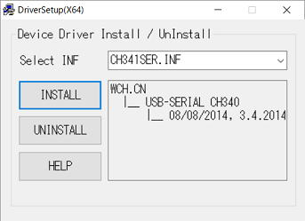
- TuKuRutch.exeを実行。
- プログラムの種類以降の手順に進んで下さい。
exeを実行したときにエラーが出るとき
- エラーケース１
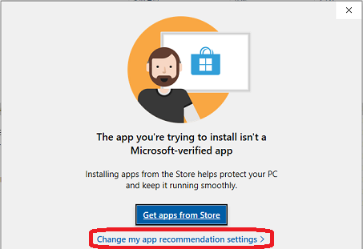
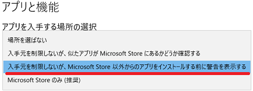 - エラーケース２
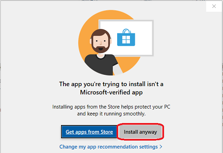 - エラーケース３
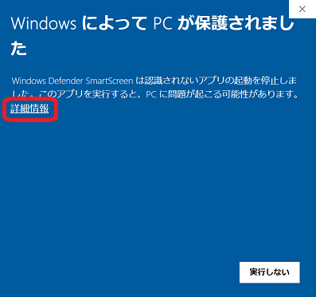
プログラムの種類
-
ロボットにはあらかじめ「最初のプログラム」が書いてあり、ロボットは「最初のプログラム」で動いています。
自分のプログラムを動かすときは 「ロボットをスクラッチアプリにつないでPC通信モードに設定」して下さい。
プログラミングをやめ、ロボットで遊ぶときは 「ロボットを最初のプログラムに戻す」をしてください。プログラムの種類を調べるときは を押して下さい。のように表示されます。
-
種類 の右の表示 書き方 説明 最初のプログラム 表示なし 又は
Normal: QuadCrawlerX.X[接続]-[最初のプログラム] 最初に書いてあるプログラム。
ロボットで遊ぶとき使うPC通信モード PC mode: QuadCrawlerX.X の右の表示を押す 自分のプログラムを動かす。
PC/タブレットで操作。
PC/タブレットが必要。Arduinoモード 表示なし 又は
Arduino: QuadCrawlerX.XArduino-アップロード 自分のプログラムを動かす。
アップロードが必要、パソコンが不要。
ESP版非対応です。
ロボットをつないでPC通信モードに設定 (プログラミングを始める)
プログラミングを始める準備をします。
- ロボットにあったUSBケーブルでロボットと接続。
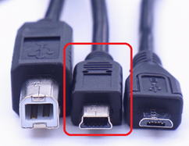
USB Bケーブル ：Arduino Uno、mBot USB miniBケーブル ：リモコンロボ、クアッドクローラー USB microBケーブル ：Duke32AIO、ESP32、Koov USB typeCケーブル ：M5Stack、M5StickC - ロボットを選択

- 1. を押す
2. の右の文字を押す
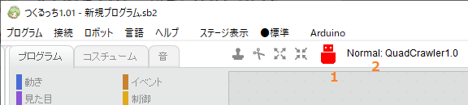
ロボットを最初のプログラムに戻す (プログラミングをやめるとき)
- 「最初のプログラムに戻す」を実行しないとロボットで遊ぶことができません。
- が緑になっていることを確認し、[接続] - [ロボットを最初のプログラムに戻す] を選択。
- 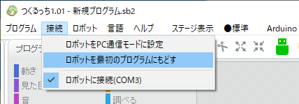
- USB接続中で、「ロボットを最初のプログラムに戻す」の文字が灰色で選択できないときは非対応です。
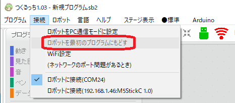
プログラムをパソコンに保存、保存したプログラムを開く、プログラムを消す
- サンプルプログラムや、保存したプログラムを開く
「プログラム」「開く」を選び、プログラムを選びます。 - プログラムを保存
「プログラム」「同じ名前で保存」を選び、てきとうな名前をつけてパソコンに保存します。そのままだとUntitled.sb2になります。
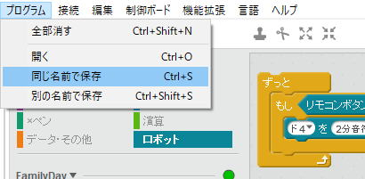 - プログラムを消す
「プログラム」「全部消す」で全部消えます。
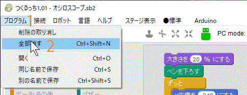
リリース履歴、ソースコード
- つくるっち3.0x（ESP完全版のみ）
sohta02.sakura.ne.jp/tukurutch/ - つくるっち2.0x
日付 app FW つくるっち 変更内容 2022/02/04 xx 1.5 TuKuRutch.20220204.avr.zip ATmega版 - 電力改善 2020/10/13 2.06 1.3 TuKuRutch.20201001.avr.zip ATmega版 - クアッドクローラー歩行改善 2020/09/13 2.05
3.051.3 TuKuRutch.20200913.esp.zip ESP版
TuKuRutch.20200913.espfull.zip ESP完全版
ATmega版無し- (M5Camera)石原淳也氏ML2Scratch/Facemesh/Handpose対応
- ESP版追加（従来のESP版→ESP完全版）
- toio対応、ココロキット対応（非公式）2020/08/16 2.04
3.04TuKuRutch.20200816.esp.zip ESP完全版
ATmega版無し- scratch3.0対応、M5Camera・ジョイパッド対応 2020/06/05 1.03 TuKuRutch.20200605.zip ATmega版
TuKuRutch.20200605.esp.zip ESP完全版
TuKuRutch.20200605.koov.zip Koovβ版- WiFi接続対応
- Duke32AIO、KOOV、アルディーノ専用学習リモコン基板、ブザー対応
- (M5Stack) サンプルプログラム追加
日本全国天気、ジャイログラフ
- (クアッドクローラー) リモコン動作改善2020/03/05 1.02 TuKuRutch.20200305.zip ATmega版
TuKuRutch.20200305e.zip ESP完全版- クアッドクローラー歩行改善（等加速＋等速制御）
- M5Stack対応（ESP完全版）
- デバッグ用ログ対応2020/02/13 1.01 TuKuRutch.20200213.zip - 拡張ブロック定義 jsonファイルからPC通信プログラムを自動生成、世界初！（作者調べ）
- クアッドクローラーやその他ロボット、arduino基板対応
- デザインを大幅変更2020/01/08 1.0 TuKuRutch.RemoconRobo.20200108.zip 2019/07/15 1.0 RemoconRoboApp.zip
RemoconRoboFW.20190715.zip- アナログリモコン対応
- 直進補正対応
- MP3/JQ6500対応2018/07/30 - mBlock20180730.zip - 初リリース
- スクラッチアプリはMakeBlockのmBlock3をforkしたものです、GPLライセンスないしApache-2.0ライセンスです。
ソースコード：
https://github.com/sohtamei/mBlock/tree/V3.4.5
https://github.com/sohtamei/TuKuRutch.ext
https://github.com/sohtamei/analogRemote
https://github.com/sohtamei/docs